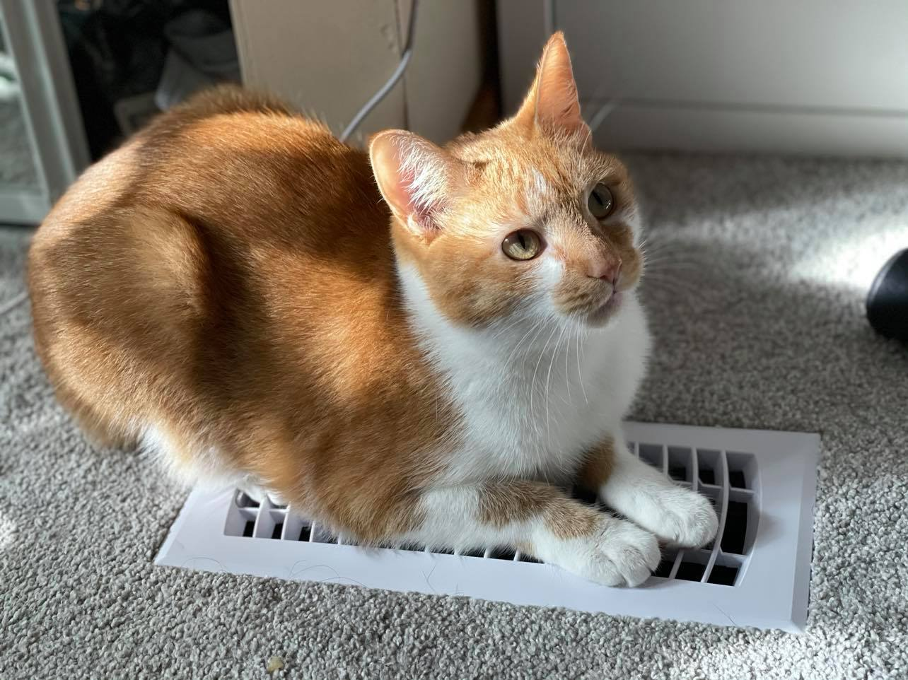

The contributing members to this page are Kevin, Bon, Sophia, and Xuan.
Hey this is my portion of the our teams page and I will leave some information for my teammates can get to know me a bit more based on my favorite hobby, which is gaming. But gaming refers to so many different genres that people can not really get an understanding from simply that message. So what I decided to do is make a table to show some of the genres of games I enjoy and the game I most enjoy in each genre.
| Genre | Favorite Game |
|---|---|
| JRPG | The World Ends With You |
| Action Adenture | Yakuza 0 |
| MMORPG | Final Fantasy 14 |
| FPS | Borderlands 2 |
| Survival Horror | Resident Evil 2 (2019) |
| Roguelike | Risk of Rain 2 |
| Third Person Shooter | Warframe |
| Metroidvania | Metroid Fusion |
| Platformer | Megaman X4 |
In addition to enjoying video games I have been able to transfer my passion for it, and contribut to the Husky Game Club here on campus from the very start of my time here at UWB in 2019. As of now I am the club president and wish to keep on helping the club be a community for anyone that enjoys games regardless of genre interest. So there are a few things I am happy with, but still have things I wish to develop in the club.

This is Xuan's page
I'm obsessed with bubble tea
Some bubble tea brand and favorite drink
| Brand | Drink |
|---|---|
| Sharetea | Strawberry Ice Blended with Ice Cream and Lychee Jelly |
| Ding Tea | Monster Latte with Golden Boba |
| Don't Yell At Me | Four Season Green Tea with Sea Salt Cheese Milk Foam |
| TP Tea | Signature Black Tea |
| Yifang Fruit Tea | Hibiscus Lemonade |
My two cats Taylor and Teagan

And a new baby Shiba - Sushi

playing with my dog Hiro is one of the best parts of my day
| films | music | pets | books |
|---|---|---|---|
| Bladerunner | hozier | hiro | The Little Prince |
| Tangled | David Bowie | Hershey | Norce Mythology |
| Arsnic and Old Lace | T0P | Gaucho | Do Androids Dream of Electric Sheep? |